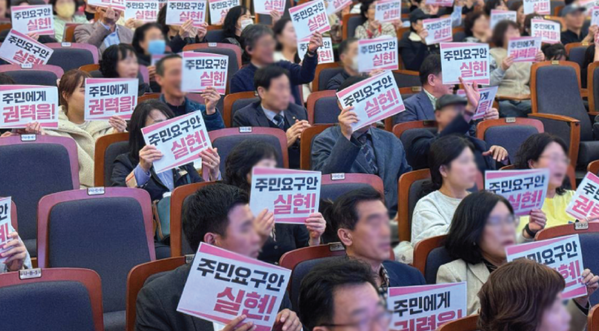
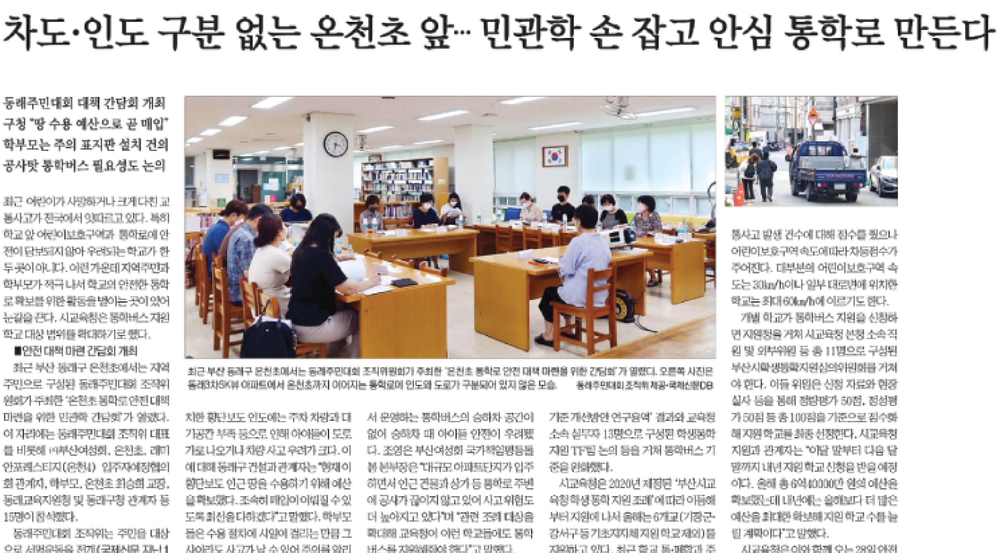
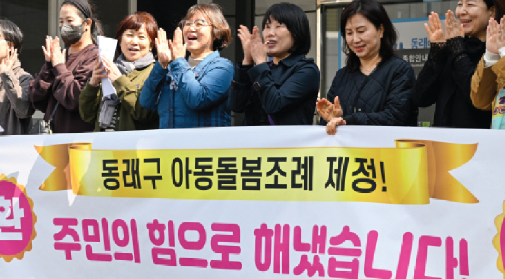
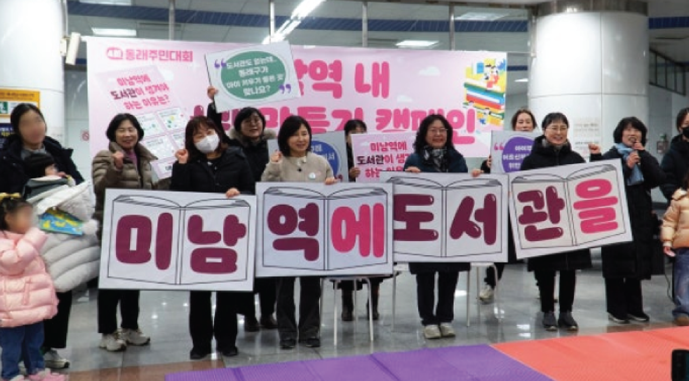
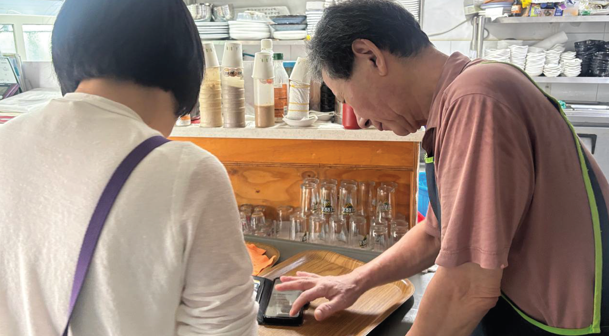
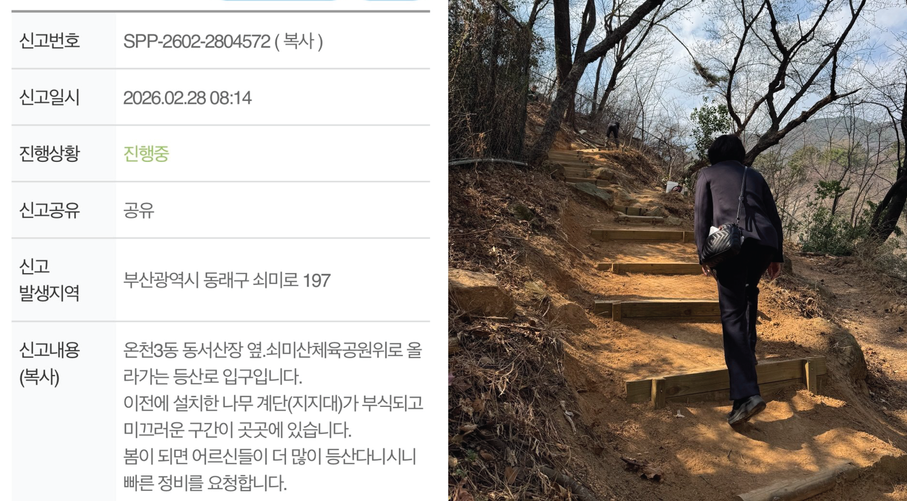
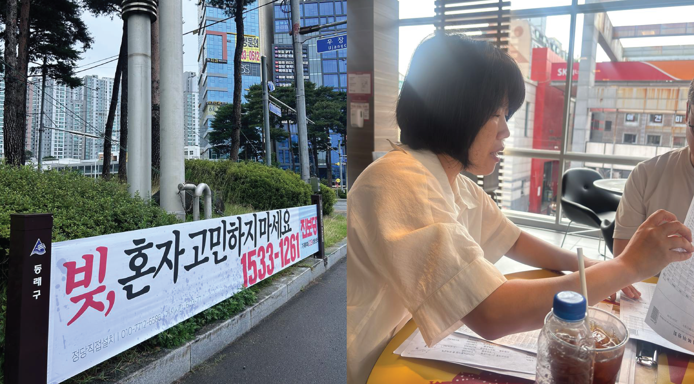
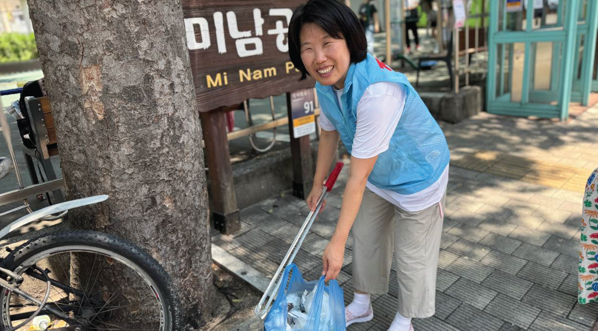
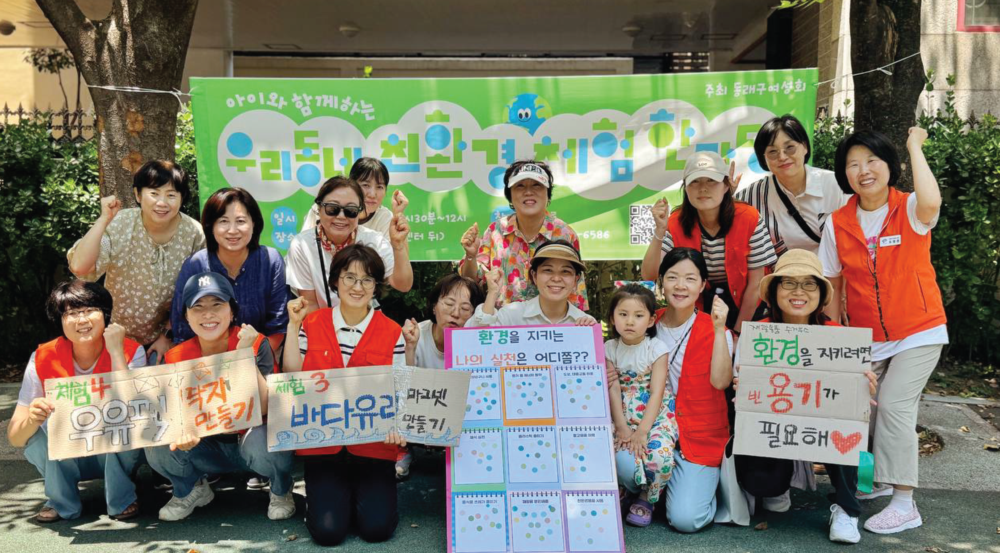
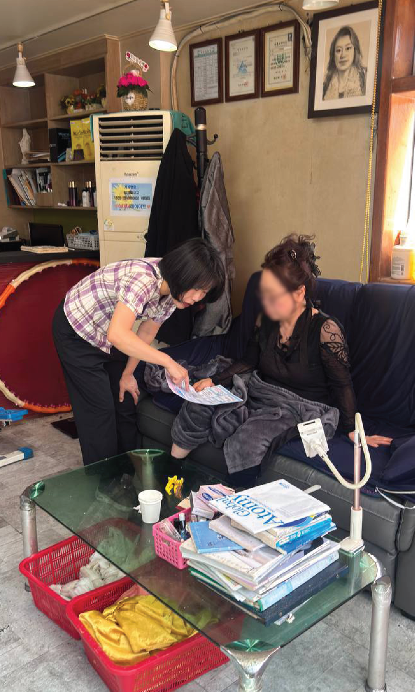

기호 5번
언제나 주민 곁에
구의원은
조영은
동래구의원 후보 (온천2,3동)
동래구의원 후보 (온천2,3동)
2019년, 마흔네 살의 나이에 늦깎이 엄마가 되었습니다.
이후 동래구 아동돌봄 지원조례 제정 운동, 동래아동돌봄대회 등을 추진하며 아이 키우는 부모들의 목소리를 들어왔습니다.
"주변에 도서관이 없어서 다른 구까지 간다."
"온천동에는 복지관이 하나도 없다."
"문화 공간이 너무 부족하다."
2021년부터 동래주민대회를 통해 주민들과 함께 동래구의 변화를 만들어왔습니다.
주민의 요구를 실현하는 구의회를 만들겠습니다.
주민을 위해 일하는 구의원이 되겠습니다.

2021년부터 동래주민대회와 함께하며 주민의 요구를 들어왔습니다. 재난지원금 지급, 온천천 정비, 초등학교 입학축하금 지원 등 주민의 목소리를 구청에 전달하고, 그 목소리가 정책으로 실현되는 성과를 거두었습니다.

온천초 통학로 안전대책 마련을 위한 서명운동과 민관학 간담회를 주도했습니다. 그 결과, 통학로에 신호등과 횡단보도가 신설되었고, 아이들의 안전을 저해하는 정문 앞 인도 위 주차 공간이 폐쇄되었습니다.

동래주민대회 조직위원회와 함께 '동래구 아동돌봄 통합지원 조례'를 청구하였습니다. 이후 해당 조례가 제정되어, 18세 미만 아동·청소년을 위한 지자체의 행정 지원과 예산 투입의 법적 근거가 마련되었습니다.

'동래구 도서관 설치 추진단'을 결성하여 주민과 함께 미남역 내 공립작은도서관 설치를 위한 활동을 펼치고 있습니다. 주민의 절실한 목소리를 담아, 반드시 도서관을 설치해내겠습니다.

상가를 방문하여 정보 부족으로 놓치기 쉬운 부담경감크레딧 등의 혜택을 상세히 안내해 드렸습니다. 온라인 신청에 익숙하지 않은 사장님들을 위해 현장에서 접수를 직접 도와드렸습니다.

등산로, 정류장 벤치, 지하차도, 보도블럭 등 발 딛는 곳마다 주민들의 민원을 받아 직접 접수하고, 그 결과를 안내해드리고 있습니다.

과도한 채무로 고통받는 주민들을 직접 만나 실태를 파악하고, 전문 신용상담사와 연계하여 해결 방안을 모색했습니다.

주민들이 매일 걷는 골목과 공원 등을 구석구석 살피며, 방치된 쓰레기를 줍고 마을 환경을 정비했습니다.

미남공원에서 자원 재활용의 중요성을 알리는 자원 순환 캠페인과 친환경 체험 행사를 주관했습니다.

주민이 주신 민원은
48시간 내 답변
선거사무소에
방문하셔도 됩니다.
영은이한테 전화하세요!
민원상담·정책제안·응원
010-7712-6586
언제나 주민 곁에 있겠습니다. 조영은의 힘이 되어주세요.
(예금주 : 조영은후원회(동래구의원선거))